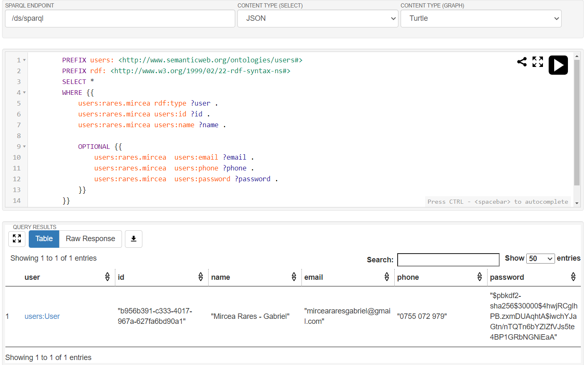
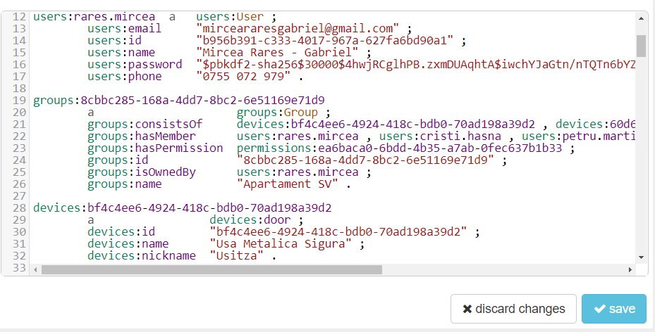

WET - Web of Things Platform is a Web tool that allows individuals to create groups of devices, interact with them,
manage permissions to other users or visitors, which are represented by temporary users which are invited to join a
group.
We wish to develop a platform that allows ease of use, friendly & responsive UI and easy management and iteraction
smart devices.
Architecture
The architecture of our platform is split into two main components: a front-end which is represented by a client
built over Angular 11 with Material Design including components of Angular Material and a back-end represented by
two smaller components, one being the Python Flask API.
Diagrams
The following diagrams illustrates the working flow of our application
At the core of our data modeling we identify 4 core entities: Users, Devices, Permissions and Groups
Users are represented by the people that will interract with our application, holding key information regarding
identifiers: id, email, name, password and mobile phone.
We used Groups as a way to represent the similarity of User's access rights. Groups can consist of one or more
Users and hold the permissions that will take effect upon different actions on our devices.
Devices are nothing but simple electonics that have the ability to connect to the local network and communicate
with our application. Devices can be discovered and attached to a certain group.
In order to represent the permissons that take place between users and devices we modeled the Permissions entity
that holds information related to basic READ, WRITE and MANAGE roles as well as the device we have created this
permissions. Groups hold these permissions we created, and can be more than 1.
In order to manage the described entities, we created controllers for each module: devices, authentication and groups.
Using these controllers we obtained full access in creating a suitable REST API to fulfill our needs.
Managing the devices is done in multiple ways: discovering the available devices on a network, which are saved at group
level under 'was discovered', point at which we first assign an id to them.
We also have the possibility to dispaly the paired devices to a group, or even send commands to a certain device.
Group controllers took up more functionality than the other two controllers, having multiple jobs assigned: adding permissions
and members to a group, creating a new group, retriving the groups associated with the current authenticated user, getting a
short summary or full data about a group.
For the authentication component, we have implemented the login functionality (done with username and password). This will
restrict unauthorized users from accesing sensitive data and prevents unwanted actions taking place. In case of login, we are
making use of a token to authenticate further actions on the application, without the need of constantly entering credentials.
For the last part we also implemented a mechanism for registering, during which the Users entity will be populated with information
like a encrypted password and username.
Interaction with SPARQL was made using Fuseki WebApp, and it helped visualising the query results and how to map them against the model,
and with SPARQL Wrapper in Python.
The following query is used during the construction of the GET /groups/:group_id request. The way we designed the group is
that we initially create the group itself, then allow the user to add devices and/or set permissions for them. This being said, initially
we would not have any values that populate the consistsOf and hasPermission relations and teh query would fail.
Given this, without the OPTIONAL operator the query will fail on the initial state of the group.
Another interesting query, or command to be more exact, is the one for updating permissions. Due to the nature of the
SPARQL, there are no UPDATE statements per se, but combined DELETE - INSERT statements, this
is due to the necessity of deleting the nodes and recreating them. Here we used the FILTER operator to select only the
permission referring to that member and device.
We prefered using Python due to it's increased flexibility regarding types, allowing us to focus on the relations
we built din the database and how to extract, parse and expose them to the client. Combining the following components,
where where able to create a streamlined flow from the initial request, to the final response itself.
Flask Application was hosted on a Heroku instance running Python, and initially posed some issues because we were not able
to use any known Linked Data databases, and storing data directly into files was out of the question. After a bit of research,
we found out that it is possible to host Fuseki, which is the WebApp running Jena, on the cloud.
Heroku being our selected Cloud Services Provider we raised another instance running Java, and with some small changes we managed to
establish a link between API and LinkedData storage. This greatly increased our ability to interact with the storage, due to the fact
that it was shared accross development and production environments.
Flask
It is a framework which extends the python application to a capable Web API. With the built-in modules, Flask is very potent
ranging from the ability of declaring controllers and structure them using Blueprint, to even a module consisting of handling.
With this being said, it allowed us to quickly and easily construct endpoints.
SPARQLWrapper
Wrapper around SPARQL Service, which helps in creating the URI and coverting the result into a manageable format. Being a Python
module it was integrated successfully in our application and was integrated as an abstractized class which called the two endopoints
from Jena - /update and /query.
Jena & Fuseki
Apache Jena is an Open-Source Java Framework for building semantic web and Linked Data applicaitons. It suited our needs for storing
Linked Data in a database, and combined with Fuseki, which is a WebApp that runs Jena, it allowed us to directly view and query the
data, not limiting us to SPARQL queries that would have been difficult to create.

Example of a SPARQL Query directly from Fuseki WebApp and the output

Exemple of triples being stored, with the possibilty of modifying the data.
User Interface / User Experience
UI Motivation
This application is mainly focused on mobile devices, therefore we need a simple layout, that the user can
easily interact with in a tactile manner.
The screens hierarchy has been structured with the focus on the group entity, as that's where the user will
spend most of its time. The following figure illustrates the screens hierarchy.
In the next sections we will discuss each screen with respect to its functionality, layout and UI/UX
considerations.
UI Screens
Splash Screen
Although the splash screen is not really visible, it is present, and it's purpuse it's to decide the further
direction that the user should take in our application.
It primarily tries to redirect to the user groups screen, and if that fails due to the user not being
authenticated, it will redirect the user to the authentication module.
Group Joining Screen
In the context of WET application, users can adhere to other groups by accessing a special joining address,
that needs to be shared by the creator of the group.
This screen has no other purpose than presenting the user with the group that he's about to join, and
checking if they're logged in or not, in which case an input asking for the user's name will be shown, so
the user can join the group as a temporary member.
After confirming the group join, the user will be (authenticated if they're a temporary group member and)
redirected to the main screen of the application, which is the group list, that we will discuss later.
Login Screen
In the case that the user is not authenticated, and he is not accessing a group join link, the login screen
is the first interaction with the application
The purpose of this screen is clear, we need to authenticate already registered users via username and
password.
The user is presented with a minimal form, with 2 fields: username and
password. There is also a button to redirect to the registration screen, in case the user
is not already registered.
These fields have a validation that ensures the fields are not empty, and disables the submit button
otherwise.
Register Screen
The registration screen is very similar with the login screen, both in user experience and purpose. If the
user has no registered account, they can chose to create an account, via the registration form.
This screen has a link back to the login screen, in case the user got here by mistake, and they already have
an account.
Both the registration and the login screen will redirect the user to the main screen after the
authentication is successful.
Main Screen (Groups list screen)
The main screen of the application presents the user with all the groups that they are a member of. The
groups are presented in a mobile-friendly manner, using cards, and large control buttons.
Each group card may have two options: group settings, and group devices.
Group settings button will redirect the user to the group settings, which we will discuss
later. This option is available only for the creator of the group.
Group devices button will redirect the user to the devices screen, which we will also
discuss later. This option is available for each member of the group.
It is worth noting that there is a button that allows the user to create a new group. This button will show
a modal that requires the user to input the group name, and will create a new group with that name. This
option is available just for the registered accounts, so temporary group members will not be able to create
groups
Group Settings
The group owner has access to a settings screen, where they will be presented with a few posible actions.
First, the owner has the option to invite other members to their group by sharing a group join link, and the
process is described in this section.
Then the user has the ability to delete their group, which will delete any temporary users as well as its
associated devices.
Furthermore, the owner of the group can see a list of all the group members, including himself, and they can
also remove any member of the group.
Group Devices
Each group member can see the list of devices associated with the group. These devices are presented using
cards along with minimal information including a nickname,
device name, device type.
The device cards contain a descriptive icon based on the device type.
It is worth noting that the group owner has the option to add new devices to the group, by
discovering devices.
Discover Devices Screen
The group owner has access to add new devices to the group, by
discovering devices.
These discovered devices are displayed in a list, with information about the device's name, type and an easy
to access button that facilitates the addition of the device to the group.
The group owner is then presented with a modal that requires a nickname for the selected device, after which
the device will be associated with the group
Device Control Screen
The device control screen is probably the most important part of the application, as it facilitates the
control of the device, which the entire application is based upon.
According to each member's access rights, the user can see the information about the
device, can modify properties like temperature, and can also
manage the access rights of other users.
No group member can modify the access rights of the group owner.
Technical Considerations
The above described UI was implemented using the Angular 11 framework, which
is based on JavaScript with support for TypeScript.
A structure of the project modules is illustrated in the following figure: